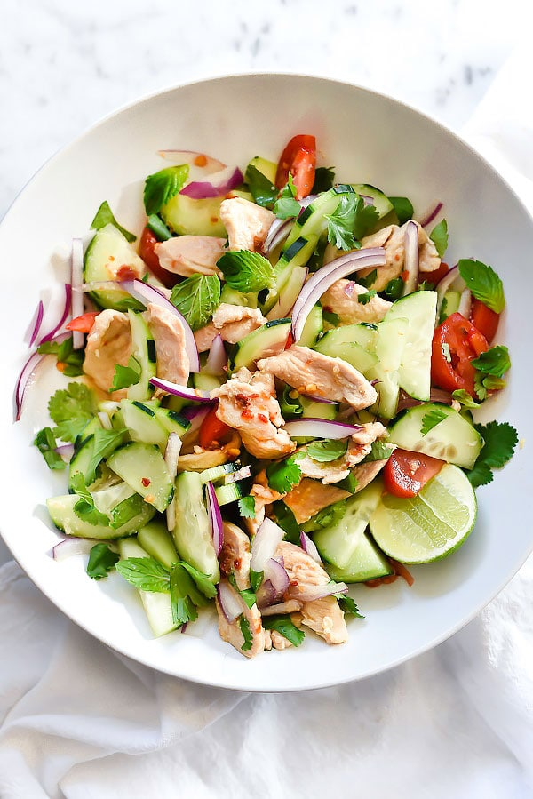

Thai Chicken and Cucumber Salad

Description
Thai flavors are lightened up in this chicken and cucumber salad with almond coconut blend almond milk subbing
in for full-fat coconut milk.
Ingredients
- 2 cups Almond Breeze Almondmilk Coconutmilk Original Unsweetened
- 2 stalks lemongrass, cut into 2-inch portions and crushed
- 1 1/2 teaspoons fresh grated ginger root
- 3 tablespoons high quality fish sauce
- 2 tablespoons coconut palm sugar or light brown sugar
- 1 teaspoon chili garlic sauce
- 1 pound boneless, skinless chicken breasy, thinly sliced
- 1 lime, juiced
- 1-2 teaspoons rice wine vinegar
- 1 cucumber, halved and then sliced into half moons
- 1/2 red onion, sliced thinly
- 4 cocktail tomatoes, cut in half and then quartered
- 1/4 cup chopped cilantro
- 1/4 cup chopped mint
For the Nuac Cham Dressing
- 1/4 cup rice wine vinegar
- 1/4 cup fish sauce
- 3-4 lines, juiced
- 1 clove garlic, minced
- 2 tablespoons grated carrot
- 2 tablespoons sugar
- Pinch of red pepper flakes
Steps
- In a medium size skillet, combine the coconut milk with the ginger, lemon grass, fish sauce, coconut palm sugar and chili garlic sauce and bring to a boil. Add the chicken and bring back to a boil then lower to a simmer and cook for 4-5 minutes or until the chicken is cooked through. Stir in the lime juice then transfer the chicken to a bowl. Save 1/3 cup of the sauce in a small bowl and stir in the rice wine vinegar to taste and set aside.
- Add the sliced cucumber, red onion and tomatoes to the chicken and gently toss with the cilantro and mint. Dress as desired with the reserved sauce with rice wine vingar dressing, or with the Nuac Cham Dressing. Serve the salad and add more herbs as desired.